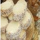
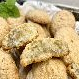

PostresEl postre es el broche de oro de una comida y resaltará la satisfacción de los platos anteriores. Pero realmente también constituye un complemento importante al aporte de nutrientes en nuestra alimentación diaria. |
Alfajores sin huevo ni leche

Receta de Alfajores sin huevo ni leche Dificultad: baja Cocina: horno Vegetariana: sí Celíacos: no Anticáncer: no 

Autor: Michelle Martínez |
|---|
Amaretti

Receta de Amaretti Dificultad: baja Cocina: horno Vegetariana: no Celíacos: no Anticáncer: no
Autor: javilowin@gmail.com |
Arroz con lecheReceta de Arroz con leche Dificultad: baja Cocina: tradicional Vegetariana: no Celíacos: no Anticáncer: no

Autor: Avril Medina |
Batido de fresas
Receta de Batido de fresas Dificultad: baja Cocina: tradicional Vegetariana: no Celíacos: no Anticáncer: no 


Autor: Rita |
Batido de limón
Receta de Batido de limón Dificultad: baja Cocina: tradicional Vegetariana: no Celíacos: no Anticáncer: no
|